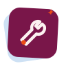

Outils de production
Choisis ce que tu veux préparer.

Tournées
Dates, commentaires, musicien·nes affecté·es, et feuilles de route.
 Feuilles de route
Feuilles de route  Journal des changements
Journal des changements

Annuaires
Musicien·nes et technicien·nes de l'orchestre — contact en un clic.
 Technicien·nes
Technicien·nes

Disponibilités
La grille interne, et les demandes envoyées aux titulaires.
 Demandes titulaires
Demandes titulaires 
Vue d'ensemble
Qui joue où, toutes tournées confondues, en un seul tableau.
Ouvrir →

Administration
Tableau de bord, gestion des comptes, historique des modifications.
